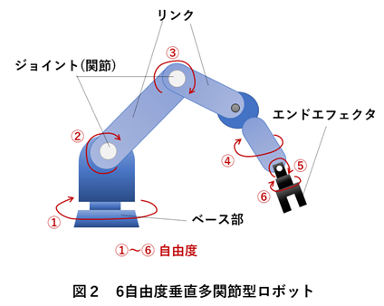

ゼロからのROS2
力制御とインピーダンス制御
大阪大学 中島優作
力制御参考資料
本スライド(実践)、教科書(理論)の併用がおススメ

ロボット工学の基礎から力制御理論まで、分かりやすいイラストで解説
インピーダンス制御の基礎理論も含まれている

力制御、インピーダンス制御の理論と実装の詳細解説
実際の接触タスクに必要な制御理論が充実
山野辺 夏樹: マニピュレーションにおける力制御の研究動向, 計測と制御, 56(10), pp.741-746, 2017
なぜ力制御が必要なのか？
位置制御の限界
- 硬い物体との接触で大きな力が発生
- 組み立てや研削などの接触作業が困難
- 安全性に問題（人間との協調作業）
力制御の利点
- 接触力を制御して安全な作業が可能
- 組み立て、研削、研磨などの接触タスク
- 人間との協調作業や柔軟物との作業
受動 vs 能動コンプライアンス
| 受動コンプライアンス | 能動コンプライアンス (力制御) | |
|---|---|---|
| 柔らかさの源 | ばね・ゲル等の機械要素 | 力覚センサ + サーボ制御 |
| 応答性 | ◎ 接触の瞬間から応答 | △ 制御周期・帯域に依存 |
| 柔らかさの変更 | △ 固定（部品交換が必要） | ◎ パラメータで自由に変更 |
| 安定性・導入 | ◎ 安定・安価・シンプル | △ 発振の恐れ・センサが必要 |
| 代表例 | RCC (Peg-in-Hole) | ハイブリッド / インピーダンス制御 |
出典: 山野辺 夏樹, 「マニピュレーションにおける力制御の研究動向」,
計測と制御, 56(10), pp.741-746 (2017) の分類をもとに作成
↓ で各方式を説明
受動コンプライアンス制御

- アームは位置制御のまま
- 手先にばね・ゲル等を挟んで柔らかくする
- 機械要素なので力に即座に応答
- 柔らかさは設計時に決まり、作業ごとに固定
- 例: RCC による穴への軸の挿入
能動コンプライアンス制御

- センサで力を測りサーボで柔らかく動く
- 一般に「力制御」と呼ばれるのはこちら
- 直接的: 力そのものを目標値に制御（ハイブリッド制御）
- 間接的: 力と動きの関係を制御（インピーダンス制御）
- 柔軟に変更できる反面、周期・安定性の制約あり
本当に力“制御”が必要か？

- 受動コンプライアンスで事足りる作業も多い
- 能動制御は「計測→計算→指令」の周期ぶん遅れる
- ばね・ゲルは接触の瞬間から力を受け流す
- 「常に一定の力で押す」なら受動の方が有利な場合も
事例: 受動で力を制御

- ロボットによる乳鉢でのメカノケミカル合成
- 受動コンプライアンスで粉砕力を制御
- 粉砕の力と速度を調整して再現性が向上
- 反応経路の制御も可能に
Y. Nakajima et al., "Force-controlled robotic mechanochemical synthesis", Digital Discovery, 3, 2130-2136 (2024)
本スライドでは力制御の実装を扱います
- 実装方法1: インピーダンス制御
仮想スプリングダンパーシステムで柔軟性を実現
組み立てや研削作業に適している - 実装方法2: アドミッタンス制御
力入力から位置出力を生成
人間との協調作業や手動誘導に便利
標準の力制御コントローラはごく一部 → OSSパッケージを活用
力制御の種類と組み合わせ
| 制御方式 | 座標系 | ユーザーが実現したい制御 |
|---|---|---|
| インピーダンス制御 | 直交座標系 | 力(コンプライアンス) |
| アドミッタンス制御 | 直交座標系 | 位置(柔軟性) |
| ハイブリッド制御 | 直交座標系 | 位置+力 |
コントローラ名の読み方 (パッケージ名/クラス名)
cartesian_compliance_controller/CartesianComplianceController
ROS2標準のコントローラ
参考: Admittance Controller Documentation
- admittance_controller/AdmittanceController
- force_torque_sensor_broadcaster/ForceTorqueSensorBroadcaster
- joint_trajectory_controller/JointTrajectoryController (組み合わせ用)
admittance_controller は Humble（Ubuntu 22）から標準
インピーダンス制御・ハイブリッド制御は標準には無い
便利なOSSパッケージ
参考: fzi-forschungszentrum-informatik/cartesian_controllers
ros2_controllersに無い力制御を補える定番パッケージ
FZI製・ROS1/ROS2対応・BSD-3ライセンス
- cartesian_motion_controller: 目標姿勢に追従 (位置)
- cartesian_force_controller: 目標の力に追従 (力)
- cartesian_compliance_controller: 両者を重ね合わせ (位置+力)
力制御に必要なハードウェア

力/トルクセンサー
手先や関節に取り付けて接触力を検出
- 6軸力センサー（手先用）
- 関節トルクセンサー
- コンプライアントロボット
力制御対応ロボット

コンプライアントロボット
力制御やインピーダンス制御が可能
- Franka Robotics (Panda)
- KUKA (iiwa)
- URシリーズ（力センサー付き）
インピーダンス制御理論
インピーダンス制御とは

- 仮想的なスプリング・ダンパー・質量システムを実現
- 目標位置と現在位置の差から力を計算
- 接触力を制限して安全な作業が可能
インピーダンス制御の数式
F = Mẍ + Dẋ + K(x - x_d)
- F: 発生する力
- M: 仮想悅性
- D: 仮想粘性
- K: 仮想弾性
- x - x_d: 位置誤差
インピーダンスパラメータの調整
- K(弾性): 大きい→硬い、小さい→柔らかい
- D(粘性): 振動を抑制、安定性向上
- M(慣性): 動的な応答を決定
- 作業に応じてパラメータを調整
アドミッタンス制御とは
- インピーダンス制御の逆
- 力入力 → 位置出力
- 人間の手動誘導に適している
- メリット
- 直感的な操作が可能
- 安全性が高い
アドミッタンス制御の数式
ẍ = M⁻¹[F - Dẋ - K(x - x_d)]
- 力入力から加速度を計算
- 加速度を積分して位置を求める
- インピーダンス制御の逆関数
- 特徴
- 力を入力、位置を出力
- 人間の力に応じて動く
- 柔軟な動作が可能
- 適用例
- 手動誘導(ティーチング)
- 人間との協調作業
- 組み立て作業
インピーダンス vs アドミッタンス
- インピーダンス制御
- 位置誤差から力（トルク）を計算
- 硬い環境との接触に強い
- 摩擦やモデル誤差で位置がずれやすい
- アドミッタンス制御
- 力から位置指令を計算
- 位置制御ベースで正確・産業用ロボット向き
- 硬い環境 × 遅い制御周期で振動しやすい
力/トルクセンサーの種類
- 6軸力センサー
- 手先に取り付け
- Fx, Fy, Fz, Tx, Ty, Tzを測定
- 関節トルクセンサー
- 各関節に内蔵
- コンプライアントロボットに搭載
力制御実装のフロー
- ステップ1: 力/トルクセンサーのセットアップ
- ステップ2: インピーダンス/アドミッタンスパラメータの設定
- ステップ3: コントローラの起動と安全性確認
- ステップ4: 作業実行とモニタリング
ROS2での力制御実装

ROS2力制御システムの構成
- センサーブロードキャスター
- force_torque_sensor_broadcaster
- 力制御コントローラ
- admittance_controller
- cartesian_compliance_controller
- 安全機能
- 力制限、緊急停止
- 衝突検出
FTセンサのセットアップ
力センサーの取り付けとキャリブレーション
- センサーの物理的取り付け
- オフセットキャリブレーション
- ROS2でのトピック配信確認
- トピックだけ出すドライバは admittance_controller に直接は入らない
アドミッタンス制御の設定
admittance_controller:
ros__parameters:
joints: [joint1, joint2, ...]
kinematics:
plugin_name: kinematics_interface_kdl/KinematicsInterfaceKDL
base: base_link
tip: tool0
ft_sensor:
name: ft_sensor_name
frame: {id: link_6} # センサの座標系
control:
frame: {id: tool0} # 制御する点（TCP）
gravity_compensation: # ツールの重さを差し引く
frame: {id: tool0}
CoG: {pos: [0.1, 0.0, 0.0], force: 23.0} # 重心, 重さ[N]
admittance:
selected_axes: [true, true, true, true, true, true]
mass: [5.5, 6.6, 7.7, 8.8, 9.9, 10.1]
damping_ratio: [2.83, 2.83, 2.83, 2.83, 2.83, 2.83]
stiffness: [214.1, 214.2, 214.3, 214.4, 214.5, 214.6]
ros2_controllers（humble）の test_params.yaml を抜粋・簡略化（joints・interfaces などは省略。そのままでは動かない）
- 設定ファイル: YAMLでパラメータを定義
- センサー連携: force_torque_sensorとの結合
- 安全設定: 力の上限値や速度制限
- チューニング: M, D, Kパラメータの調整
ハイブリッド位置/力制御
- 最適アプローチ: 方向ごとに位置/力制御を切り替え
- 例: Z軸方向は力制御、XY平面は位置制御
- 用途: 研削、研磨、組み立て作業
- 実装: ros2_controllers の標準には無い（admittance_controller は「押されたら逃げる」制御で別物）
- 近い動きは FZI の cartesian_compliance_controller で作れる（Z の剛性を下げて目標力を与える）
アドミッタンスコントローラの実装
活用事例：フリードライブ
- ロボットを手で掴んで動かせるモード
- 教示・位置合わせに使う（ペンダントより速い）
- 中身は多くの場合アドミッタンス制御：
押された力 → 位置・速度の指令 - 実装方法はロボットによって違う↓
フリードライブの実装方法
τ = g(q)（K = 0）
手首のボタンを押しながら動かす
→ 関節の位置・速度制御
ペンダント背面のボタン / URScript の freedrive_mode()
トルクを直接出せる機種はインピーダンス型、出せない機種はアドミッタンス型になりやすい
フリードライブと接触作業の制御的な違い
M x″ + D x′ + K (x − xd) = Fext
- 同じ式で、違いはばね K（と目標 xd）があるかだけ
- 接触作業：目標を壁の少し奥に置くと、押し付け力 ≈ K (xd − x)
- フリードライブの「重さ」＝仮想質量 M（動かしやすさ）
- 「軸ロック」＝特定の方向をアドミッタンス計算から外す → XY 平面だけ動かせる